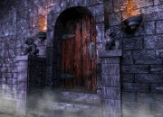
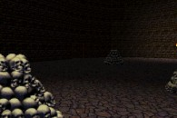
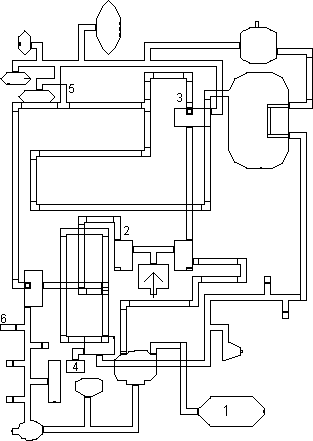

| 1 | Power Lich enemy, protects chest with the Crystal of Terrax of the [Arch Mages Quest]. |
| 2 | Locked door, open with switch at 4 |
| 3 | Secret door, only opens from the back of the picture |
| 4 | Switch, open door at 2 |
| 5 | Switch, opens partial wall at 6 |
| 6 | Switch, open door to room 1 |
Leave us a message at mgrounds@hotmail.com